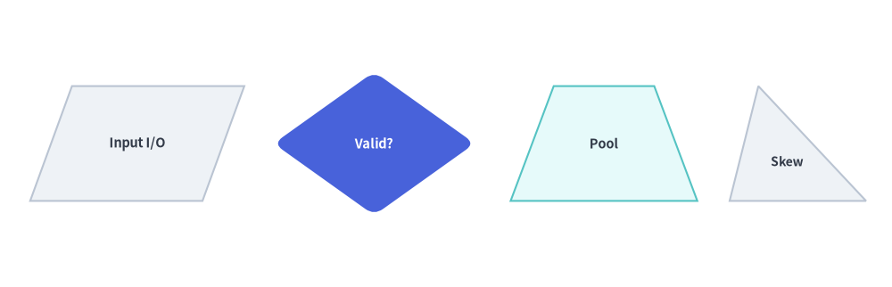
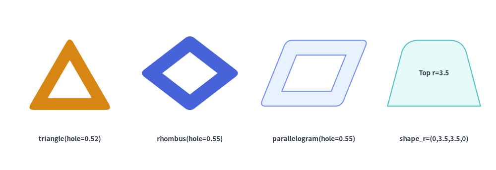
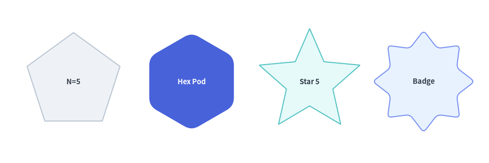
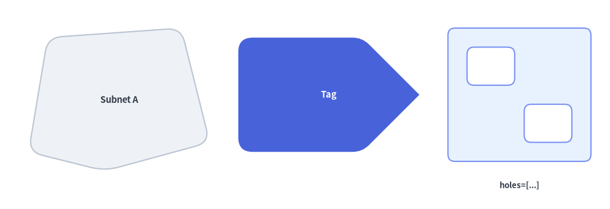
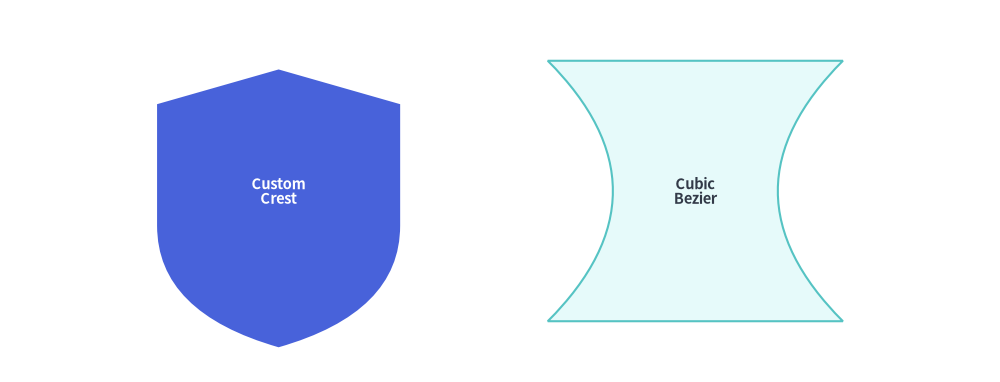

Polygons & Custom Paths
The Polygons & Custom Paths category of drawlib.shapes provides 9 geometric and path primitives: planar triangles and quadrilaterals (triangle, parallelogram, trapezoid, rhombus), radially symmetric shapes (regularpolygon, star), decorative corner-cut frames (plaque), arbitrary coordinate polygons (polygon), and a low-level Bézier vector path builder (shape).

Source Code
from drawlib.canvas import save, setup
from drawlib.shapes import (
parallelogram,
plaque,
polygon,
regularpolygon,
rhombus,
shape,
star,
trapezoid,
triangle,
)
from drawlib.styles import Styles
setup(width=128, height=58)
lbl_dark = Styles.DarkBold.patch(text_size=10.0)
lbl_white = Styles.WhiteBold.patch(text_size=10.0)
# Row 1: Planar Triangle, Parallelogram, Rhombus, Trapezoid, Plaque
triangle(
(15, 42),
width=19,
height=16,
style=Styles.Neutral,
text="triangle",
text_style=lbl_dark.patch(xy_shift=(0, -2.5)),
)
parallelogram(
(40, 42),
width=21,
height=15,
corner_angle=68,
style=Styles.PrimaryNeutral,
text="parallel",
text_style=lbl_dark,
)
rhombus(
(66, 42),
width=23,
height=17,
style=Styles.PrimaryFlat,
text="rhombus",
text_style=lbl_white,
)
trapezoid(
(91, 42),
height=15,
bottomedge_width=22,
topedge_width=13,
style=Styles.SecondaryNeutral,
text="trapezoid",
text_style=lbl_dark,
)
plaque(
(115, 42),
width=20,
height=15,
variant="concave",
style=Styles.Neutral,
text="plaque",
text_style=lbl_dark,
)
# Row 2: Regular Polygon, Star, Hollow Hexagon, Arbitrary Polygon, Custom Bézier Shape
regularpolygon(
(17, 15),
num_vertex=6,
radius=10.0,
style=Styles.SecondaryNeutral,
text="hex",
text_style=lbl_dark,
)
star(
(43, 15),
num_vertex=5,
radius_ext=11.0,
radius_int=5.2,
style=Styles.PrimaryFlat,
text="star",
text_style=lbl_white,
)
regularpolygon(
(68, 15),
num_vertex=6,
radius=10.0,
hole_ratio=0.55,
style=Styles.PrimaryNeutral.patch(shape_r=1.5),
text="ring",
text_style=Styles.DarkBold.patch(text_size=9.5),
)
polygon(
[(82, 8), (100, 8), (104, 15), (100, 22), (82, 22)],
style=Styles.Neutral.patch(shape_r=1.5),
text="polygon",
text_style=lbl_dark,
)
shape(
(116, 15),
path_points=[(0, 6), (0, 18), (10, 22), (20, 18), (20, 6), ((20, 1), (10, 0)), ((0, 1), (0, 6))],
style=Styles.SecondaryNeutral,
text="shape",
text_style=lbl_dark,
)
save()
1. Quick Comparison of Polygon & Path Primitives
| Function | Anchor | Vertex Count | hole_ratio |
style.shape_r |
Typical Diagram Use Cases |
|---|---|---|---|---|---|
triangle |
Center (cx, cy) |
3 | Yes (0, 1) |
float or 3-tuple (bl, top, br) |
Warning badges, delta markers, pyramids, right/skewed triangles. |
parallelogram |
Center (cx, cy) |
4 | Yes (0, 1) |
float or 4-tuple (bl, tl, tr, br) |
Flowchart data I/O blocks, message streams, skewed layers. |
trapezoid |
Center (cx, cy) |
4 | Yes (0, 1) |
float or 4-tuple (bl, tl, tr, br) |
Multiplexers, neural network pooling layers, stage reducers. |
rhombus |
Center (cx, cy) |
4 | Yes (0, 1) |
float or 4-tuple (left, top, right, bottom) |
Flowchart decision gates, ER relationship diamonds, routers. |
regularpolygon |
Center (cx, cy) |
num_vertex >= 3 |
Yes (0, 1) |
float or N-tuple |
Hexagon microservice pods (N=6), octagons (N=8), pentagons (N=5). |
star |
Center (cx, cy) |
2 * num_vertex |
— | float or (2N)-tuple |
Rating stars (N=5), seal/award badges (N=8, 12), focal markers. |
plaque |
Center (cx, cy) |
8 / 12 / Curved | — | float or tuple (chamfered/notched) |
Certificate frames, SLA badges, formal labels, ticket cards. |
polygon |
Explicit xys |
len(xys) >= 3 |
— | float or N-tuple |
Custom network zones, irregular regions, bespoke multi-vertex cards. |
shape |
Center (cx, cy) |
Arbitrary | — | — | Custom silhouettes mixing straight lines, quadratic, and cubic Béziers. |
2. Planar Quadrilaterals & Triangles (triangle, parallelogram, trapezoid, rhombus)
All four planar polygon functions share a consistent center-anchored bounding-box contract and support corner rounding (style.shape_r), hollow cutouts (hole_ratio), and rotation (style.angle):
triangle(
xy: tuple[float, float],
width: float,
height: float,
topvertex_x: float | None = None,
*,
hole_ratio: float | None = None,
style: Style,
text: str = "",
text_style: Style | None = None,
) -> None
parallelogram(
xy: tuple[float, float],
width: float,
height: float,
corner_angle: float = 60.0,
*,
hole_ratio: float | None = None,
style: Style,
text: str = "",
text_style: Style | None = None,
) -> None
trapezoid(
xy: tuple[float, float],
height: float,
bottomedge_width: float,
topedge_width: float,
topedge_x: float | None = None,
*,
hole_ratio: float | None = None,
style: Style,
text: str = "",
text_style: Style | None = None,
) -> None
rhombus(
xy: tuple[float, float],
width: float,
height: float,
*,
hole_ratio: float | None = None,
style: Style,
text: str = "",
text_style: Style | None = None,
) -> None
Parameter Reference
| Function | Parameter | Type | Default | Description |
|---|---|---|---|---|
| Common | xy |
tuple[float, float] |
Required | Center coordinate (x, y) of the unrotated bounding box (when using preset Styles.*). |
hole_ratio |
float | None |
None |
Optional concentric center cutout ratio in (0.0, 1.0). |
|
style |
Style |
Required | Fill, border, rotation (angle), and vertex rounding (shape_r: scalar float or per-vertex tuple). |
|
text / text_style |
str / Style | None |
"" / None |
Centered text label and optional typography override (use xy_shift to nudge text in asymmetric triangles/trapezoids). |
|
triangle |
width / height |
float |
Required | Base width (> 0) and vertical height (> 0). |
topvertex_x |
float | None |
None |
Horizontal offset of the top apex relative to the bottom-left corner (None defaults to width / 2 for an isosceles triangle; 0 creates a left-aligned right triangle; width creates a right-aligned right triangle). |
|
parallelogram |
width / height |
float |
Required | Base edge width (> 0) and vertical height (> 0). Note: total horizontal bounding width is width + height / tan(corner_angle). |
corner_angle |
float |
60.0 |
Bottom-left interior slant angle in degrees (0 < corner_angle < 90). |
|
trapezoid |
height |
float |
Required | Vertical height (> 0). Note: trapezoid specifies bottomedge_width and topedge_width instead of width. |
bottomedge_width |
float |
Required | Length of the bottom horizontal edge (> 0). |
|
topedge_width |
float |
Required | Length of the top horizontal edge (> 0). Set topedge_width > bottomedge_width for an inverted funnel trapezoid. |
|
topedge_x |
float | None |
None |
Horizontal offset of the top-left vertex relative to the bottom-left vertex (None centers the top edge symmetrically: (bottomedge_width - topedge_width) / 2). |
|
rhombus |
width / height |
float |
Required | Total horizontal diagonal span and vertical diagonal span (> 0). |
from drawlib.canvas import save, setup
from drawlib.shapes import parallelogram, rhombus, trapezoid, triangle
from drawlib.styles import Styles
setup(width=124, height=40)
lbl_dark = Styles.DarkBold.patch(text_size=10.5)
# 1. Parallelogram (I/O Stream)
parallelogram(
(19, 20),
width=24,
height=16,
corner_angle=70,
style=Styles.Neutral,
text="Input I/O",
text_style=lbl_dark,
)
# 2. Rhombus (Decision Gate with rounded vertices)
rhombus(
(52, 20),
width=28,
height=20,
style=Styles.PrimaryFlat.patch(shape_r=1.5),
text="Valid?",
text_style=Styles.WhiteBold.patch(text_size=10.5),
)
# 3. Symmetric Trapezoid (Pooling / Funnel Layer)
trapezoid(
(84, 20),
height=16,
bottomedge_width=26,
topedge_width=14,
style=Styles.SecondaryNeutral,
text="Pool",
text_style=lbl_dark,
)
# 4. Asymmetric Triangle (topvertex_x shifts apex horizontally)
triangle(
(111, 20),
width=19,
height=16,
topvertex_x=4,
style=Styles.Neutral,
text="Skew",
text_style=Styles.DarkBold.patch(text_size=10.0, xy_shift=(-1.5, -2.5)),
)
save()

Hollow Cutouts (hole_ratio) & Per-Vertex Rounding (shape_r) on Planar Polygons
All four planar polygons accept hole_ratio in (0.0, 1.0) to cut out a proportional inner hole, and accept either a scalar float or a per-vertex tuple in style.patch(shape_r=...):
from drawlib.canvas import save, setup
from drawlib.shapes import parallelogram, rhombus, trapezoid, triangle
from drawlib.styles import Styles
from drawlib.text import text
setup(width=128, height=44)
lbl = Styles.DarkBold.patch(text_size=9.5)
# 1. Hollow rounded triangle (warning frame)
triangle(
(18, 25),
width=22,
height=19,
hole_ratio=0.52,
style=Styles.WarningFlat.patch(shape_r=1.8),
)
text((18, 8), "triangle(hole=0.52)", style=lbl)
# 2. Hollow rounded rhombus
rhombus(
(49, 25),
width=26,
height=20,
hole_ratio=0.55,
style=Styles.PrimaryFlat.patch(shape_r=1.5),
)
text((49, 8), "rhombus(hole=0.55)", style=lbl)
# 3. Hollow parallelogram
parallelogram(
(81, 25),
width=21,
height=17,
corner_angle=68,
hole_ratio=0.55,
style=Styles.PrimaryNeutral.patch(shape_r=1.5),
)
text((81, 8), "parallelogram(hole=0.55)", style=lbl)
# 4. Trapezoid with top corners rounded only: shape_r=(0, 3.5, 3.5, 0)
trapezoid(
(112, 25),
height=17,
bottomedge_width=24,
topedge_width=15,
style=Styles.SecondaryNeutral.patch(shape_r=(0, 3.5, 3.5, 0)),
text="Top r=3.5",
text_style=lbl,
)
text((112, 8), "shape_r=(0,3.5,3.5,0)", style=lbl)
save()

3. Regular Polygons & Stars (regularpolygon, star)
regularpolygon and star construct radially symmetric shapes centered at xy, with the first vertex placed at the top ($90^\circ$, or rotated by style.angle):
regularpolygon(
xy: tuple[float, float],
num_vertex: int,
radius: float,
*,
hole_ratio: float | None = None,
style: Style,
text: str = "",
text_style: Style | None = None,
) -> None
star(
xy: tuple[float, float],
num_vertex: int,
radius_ext: float,
radius_int: float,
*,
style: Style,
text: str = "",
text_style: Style | None = None,
) -> None
| Function | Parameter | Type | Default | Description |
|---|---|---|---|---|
regularpolygon |
xy |
tuple[float, float] |
Required | Center coordinate (cx, cy) of the circumscribed circle. |
num_vertex |
int |
Required | Number of polygon vertices/sides (>= 3, e.g. 5 for pentagon, 6 for hexagon, 8 for octagon). |
|
radius |
float |
Required | Circumscribed radius from center xy to each vertex (> 0). |
|
hole_ratio |
float | None |
None |
Optional concentric polygon cutout ratio in (0.0, 1.0). |
|
style |
Style |
Required | Supports angle rotation and shape_r vertex rounding (scalar float or num_vertex-tuple). |
|
star |
xy |
tuple[float, float] |
Required | Center coordinate (cx, cy) of the star. |
num_vertex |
int |
Required | Number of outer star tips (>= 3). Total polygon vertices = 2 * num_vertex. |
|
radius_ext |
float |
Required | Outer tip radius (> radius_int). |
|
radius_int |
float |
Required | Inner valley radius (0 < radius_int < radius_ext). |
|
style |
Style |
Required | Supports angle rotation and shape_r rounding (scalar float or (2 * num_vertex)-tuple of alternating (outer_tip, inner_valley) radii). |
from drawlib.canvas import save, setup
from drawlib.shapes import regularpolygon, star
from drawlib.styles import Styles
setup(width=120, height=40)
lbl_dark = Styles.DarkBold.patch(text_size=10.5)
# 1. Pentagon (num_vertex=5)
regularpolygon(
(18, 20),
num_vertex=5,
radius=12,
style=Styles.Neutral,
text="N=5",
text_style=lbl_dark,
)
# 2. Rounded Hexagon Pod (num_vertex=6, shape_r=2)
regularpolygon(
(47, 20),
num_vertex=6,
radius=12,
style=Styles.PrimaryFlat.patch(shape_r=2),
text="Hex Pod",
text_style=Styles.WhiteBold.patch(text_size=10.5),
)
# 3. 5-Point Star (radius_ext=13, radius_int=6.0)
star(
(76, 20),
num_vertex=5,
radius_ext=13,
radius_int=6.0,
style=Styles.SecondaryNeutral,
text="Star 5",
text_style=lbl_dark,
)
# 4. Rounded 8-Point Badge Star (num_vertex=8, shape_r=1.0)
star(
(104, 20),
num_vertex=8,
radius_ext=12.5,
radius_int=8.8,
style=Styles.PrimaryNeutral.patch(shape_r=1.0),
text="Badge",
text_style=lbl_dark,
)
save()

4. Decorative & Certificate Plaques (plaque)
plaque renders a rectangular frame with decorative corner cutouts—ideal for SLA/compliance badges, certificate headers, ticket stubs, and formal architectural labels:
plaque(
xy: tuple[float, float],
width: float,
height: float,
*,
variant: Literal[
"concave", "standard",
"chamfered", "octagon",
"notched",
] = "concave",
cut_ratio: float | None = None,
style: Style,
text: str = "",
text_style: Style | None = None,
) -> None
Parameter & variant Reference
| Parameter | Type | Default | Description |
|---|---|---|---|
xy |
tuple[float, float] |
Required | Center coordinate (x, y) of the plaque bounding box (supports style.halign / style.valign). |
width / height |
float |
Required | Outer horizontal width (> 0) and vertical height (> 0). |
variant |
PlaqueVariant |
"concave" |
Corner cutout geometry (see Plaque variant Comparison below). |
cut_ratio |
float | None |
None |
Corner cutout size fraction in [0.02, 0.45] relative to min(width, height). Defaults to 0.20 when None. |
style |
Style |
Required | Fill, border, rotation (angle), and optional vertex filleting (shape_r is supported on "chamfered" and "notched" variants). |
text / text_style |
str / Style | None |
"" / None |
Centered text label and optional typography override. |
variant |
Accepted Aliases | Corner Geometry | Supports style.shape_r |
Typical Use Cases |
|---|---|---|---|---|
"concave" (default) |
"standard" |
Smooth inward quarter-circle arcs scooped out of all 4 corners | — (Curved arcs) | Classic ornamental plaques, tickets, and certification badges. |
"chamfered" |
"octagon" |
Straight $45^\circ$ diagonal corner cuts (8-vertex octagonal card) | Yes (float or 8-tuple) |
Industrial/hardware labels, stop/gate cards, and beveled frames. |
"notched" |
— | Orthogonal $90^\circ$ L-shaped inward corner steps (12-vertex stepped card) | Yes (float or 12-tuple) |
Retro/pixel-style frames, bus cards, and architectural title blocks. |
from drawlib.canvas import save, setup
from drawlib.shapes import plaque
from drawlib.styles import Styles
from drawlib.text import text
setup(width=128, height=44)
lbl = Styles.DarkBold.patch(text_size=9.5)
# 1. Concave (inward circular arc corners)
plaque(
(18, 25),
width=27,
height=18,
variant="concave",
cut_ratio=0.22,
style=Styles.PrimaryFlat,
text="CONCAVE",
text_style=Styles.WhiteBold.patch(text_size=10.0),
)
text((18, 8), 'variant="concave"', style=lbl)
# 2. Chamfered / Octagon (45° diagonal cut corners)
plaque(
(50, 25),
width=27,
height=18,
variant="chamfered",
cut_ratio=0.24,
style=Styles.PrimaryNeutral,
text="CHAMFER",
text_style=Styles.DarkBold.patch(text_size=10.0),
)
text((50, 8), 'variant="chamfered"', style=lbl)
# 3. Notched (90° inward step corners)
plaque(
(82, 25),
width=27,
height=18,
variant="notched",
cut_ratio=0.22,
style=Styles.SecondaryNeutral,
text="NOTCHED",
text_style=Styles.DarkBold.patch(text_size=10.0),
)
text((82, 8), 'variant="notched"', style=lbl)
# 4. Deep concave cut (cut_ratio=0.35)
plaque(
(113, 25),
width=25,
height=18,
variant="concave",
cut_ratio=0.35,
style=Styles.Neutral,
text="r=0.35",
text_style=Styles.DarkBold.patch(text_size=10.0),
)
text((113, 8), "cut_ratio=0.35", style=lbl)
save()

5. Arbitrary Coordinate Polygons (polygon)
polygon constructs a closed polygon directly from an explicit sequence of canvas vertex coordinates xys=[(x1, y1), (x2, y2), ...], with optional interior cutout holes:
polygon(
xys: list[tuple[float, float]],
*,
holes: list[list[tuple[float, float]]] | None = None,
style: Style,
text: str = "",
text_style: Style | None = None,
) -> None
| Parameter | Type | Default | Description |
|---|---|---|---|
xys |
list[tuple[float, float]] |
Required | Ordered sequence of at least 3 outer canvas vertex coordinates [(x1, y1), (x2, y2), ...]. |
holes |
list[list[tuple[float, float]]] | None |
None |
Optional list of inner cutout rings [[(hx1, hy1), ...], ...]. Winding direction is normalized automatically (xys CCW, holes CW). |
style.shape_r |
float | tuple[float, ...] | None |
None |
Pass a scalar float to round all outer and hole vertices equally, or a tuple of radii (r1, r2, ..., rN) matching len(xys) to round specific outer vertices selectively (0 keeps a vertex sharp). |
text / text_style |
str / Style | None |
"" / None |
Embedded label automatically placed at the bounding-box center of xys. |
from drawlib.canvas import save, setup
from drawlib.shapes import polygon
from drawlib.styles import Styles
from drawlib.text import text
setup(width=128, height=44)
lbl = Styles.DarkBold.patch(text_size=9.5)
# 1. Irregular network zone with uniform corner rounding
polygon(
xys=[(6, 12), (10, 36), (38, 38), (44, 14), (22, 8)],
style=Styles.Neutral.patch(shape_r=3),
text="Subnet A",
text_style=Styles.DarkBold.patch(text_size=10.5),
)
# 2. Custom tag card with per-vertex radii (sharp tip on right)
polygon(
xys=[(50, 12), (50, 36), (76, 36), (88, 24), (76, 12)],
style=Styles.PrimaryFlat.patch(shape_r=(3, 3, 2, 0, 2)),
text="Tag",
text_style=Styles.WhiteBold.patch(text_size=10.5),
)
# 3. Compound polygon frame with two interior cutout holes
polygon(
xys=[(94, 10), (124, 10), (124, 38), (94, 38)],
holes=[
[(98, 26), (108, 26), (108, 34), (98, 34)],
[(110, 14), (120, 14), (120, 22), (110, 22)],
],
style=Styles.PrimaryNeutral.patch(shape_r=1.5),
)
text((109, 5), "holes=[...]", style=lbl)
save()

6. Low-Level Vector & Bézier Path Builder (shape)
For custom silhouettes that combine straight lines, quadratic Bézier curves, and cubic Bézier curves with relative positioning and rotation around xy, use shape():
shape(
xy: tuple[float, float],
path_points: list[
tuple[float, float]
| tuple[tuple[float, float], tuple[float, float]]
| tuple[tuple[float, float], tuple[float, float], tuple[float, float]]
],
*,
style: Style,
text: str = "",
text_style: Style | None = None,
is_default_center: bool = False,
) -> None
Parameter / path_points Element |
Type / Tuple Format | Description |
|---|---|---|
xy |
tuple[float, float] |
Anchor coordinate (x, y) on the canvas (center of bounding box when using preset Styles.*). |
First Element path_points[0] |
(x0, y0) |
Must be a 2-float starting vertex (x0, y0) in local coordinates (Path.MOVETO). |
| Straight Line Segment | (x, y) |
Draws a straight line to (x, y) (Path.LINETO). |
| Quadratic Bézier Segment | ((cp_x, cp_y), (end_x, end_y)) |
Curves toward single control point cp before ending at end (Path.CURVE3). |
| Cubic Bézier Segment | ((cp1_x, cp1_y), (cp2_x, cp2_y), (end_x, end_y)) |
Curves via two control points cp1 and cp2 to end (Path.CURVE4). |
is_default_center |
bool |
Fallback alignment when style.halign or style.valign is None. All preset Styles.* explicitly set halign="center", valign="center", centering the path's bounding box at xy. |
from drawlib.canvas import save, setup
from drawlib.shapes import shape
from drawlib.styles import Styles
setup(width=115, height=44)
# 1. Custom Crest Silhouette (Quadratic Bézier curved base)
shape(
xy=(32, 22),
path_points=[
(0, 14),
(0, 28),
(14, 32),
(28, 28),
(28, 14),
((28, 4), (14, 0)),
((0, 4), (0, 14)),
],
style=Styles.PrimaryFlat,
text="Custom\nCrest",
text_style=Styles.WhiteBold.patch(text_size=10.5),
)
# 2. Custom Symmetric Hourglass Silhouette (Cubic Bézier waist)
shape(
xy=(80, 22),
path_points=[
(0, 0),
((10, 10), (10, 20), (0, 30)),
(34, 30),
((24, 20), (24, 10), (34, 0)),
],
style=Styles.SecondaryNeutral,
text="Cubic\nBezier",
text_style=Styles.DarkBold.patch(text_size=10.5),
)
save()

[!TIP]
- Before building a custom Bézier path from scratch with
shape(), check 3D Containers, Flow & Grouping (document,funnel,cloud,brace), Callouts, Badges & Status (shield,ribbon,pin,tag,explosion), and Faces, Clocks, Symbols & Operators (gear,math_symbol,heart,lightning,moon), which provide ready-made, parameterized implementations of common complex silhouettes.